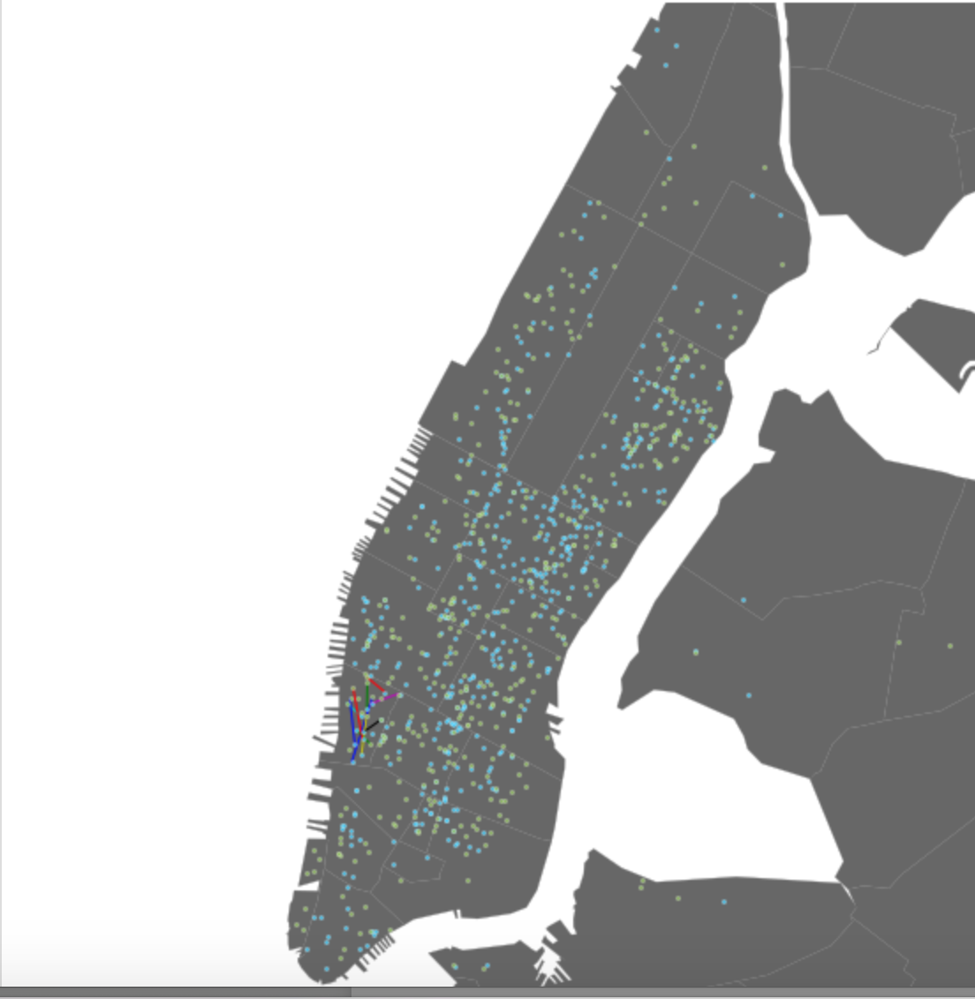

Extracting results from Data
I am using this webpage to showcase some of the projects I'm working on right now! Take a look around and explore the data!
This project uses data collected on the housing market in and around Chicago to predict the price of a give home.
Click here to view the project
This project is based on Kaggle Competition to determine whether Kobe Bryant made a particular shot during a game, given details on the shot location, time, and period, among other data points.
Using data collected from NYC cabs, this project show visually the places a cab driver will most likely end up given the neighborhood, time of day, etc.